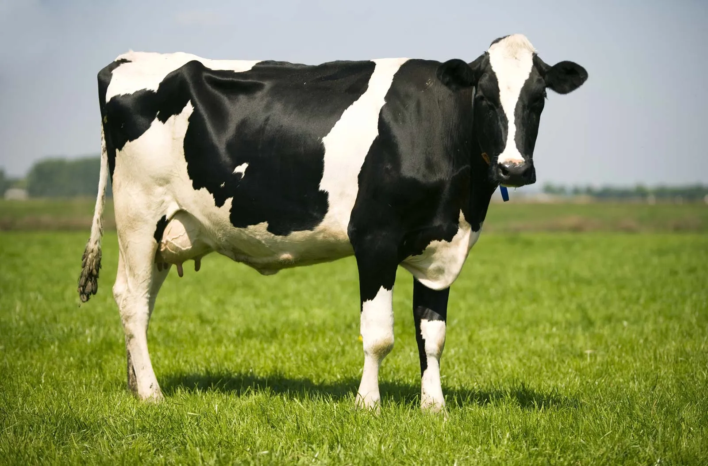
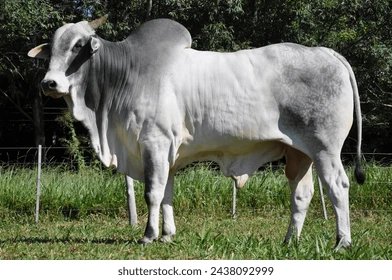
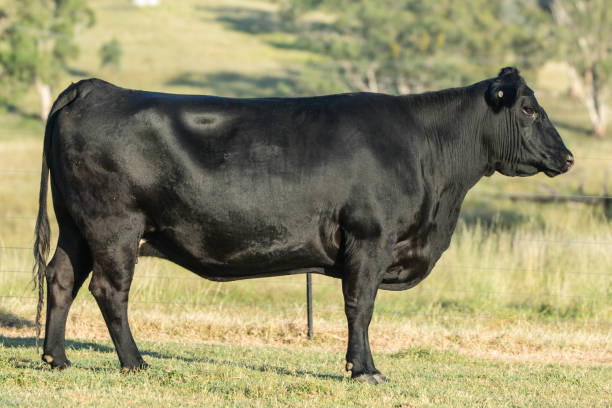

Welcome to our cattle website
Discover the best breeds of cattle for milk and meat.Learn how they grow and how to breed them effectively.
Popular cattle Breeds
| Pictures | Name | Use | Description | Growth | Breeding |
|---|---|---|---|---|---|
 |
Boran | Beef | Hardy African Breed, very disease-resistant and great for beef production. | 12-14 months to maturity | Natural mating |
|  | Friesian | Milk | High-yeild dairy breed ,known for producing karge volume of milk daily. | 15-18 months to milk | Artifical insermination |
|  | Zebu | Beef and Labour | Heat-tplarant and used for meat and ferm work in tropical areas. | Slow growth, Strong and enduring | Natural or cotrolled |
|  | Augus | Beef | Top-quality beef producer, nornless breed, popular worldwide. | 12-15 months to finish | AI or Natural |
 |
Jersey | Milk | Samll dairy cow production rich, high-fat milk.Brown coat color. | 12-15 months to milk | Mainly AI |
 |
Brahman | Beef | Large, muscular breed known for heat tolerance and resistance to insects. Grey or red coat. | 24-30 months to market | Natural and AI |